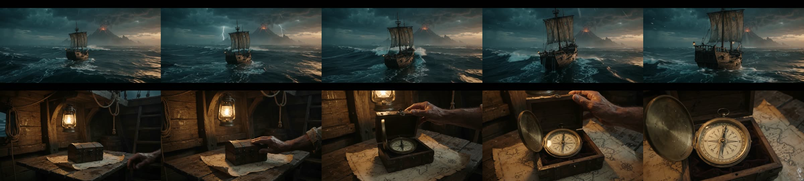
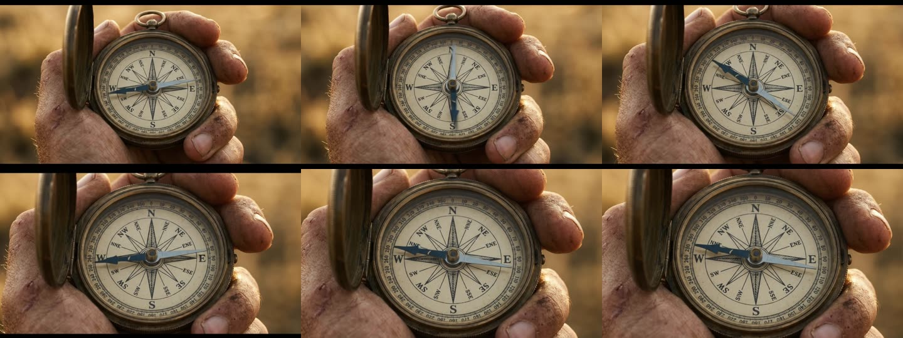
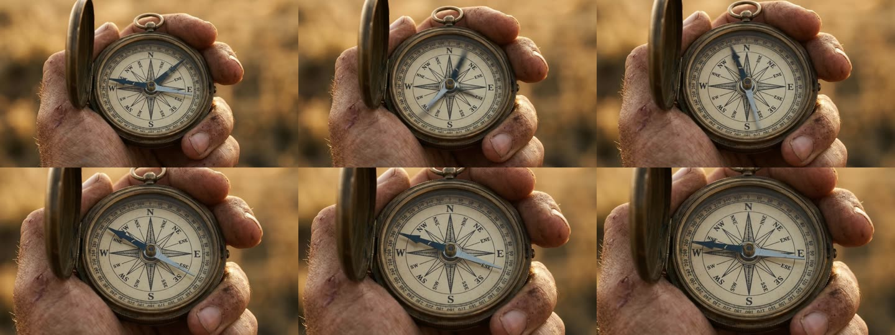
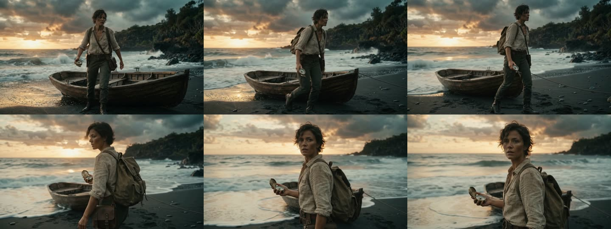

預覽轉成 854 寬；原檔 1280×720 在 runs/O4/。crop 欄是 ffmpeg cropdetect 偵測到的實際畫面範圍，1280:720:0:0 代表沒黑邊。

鏡頭 #2＋#3，15 秒 timecode。第 8 秒準確切到船艙，開盒露出指南針放在地圖上，盤面對；海面段有閃電、船尾燈。**仍有 letterbox 黑邊（上下各 64 px，實際畫面 1280×594）**，prompt 明寫 no letterbox 沒用。組裝時用 ffmpeg 裁成 2.15:1 或整支開場統一加黑邊。
The first image is the exact compass to use; do not add clock numerals or clock hands. Cinematic live-action footage, subtle 35mm film grain, moody teal-and-amber grade. Full-frame 16:9 image, no letterbox or black bars. [0-8s] Wide establishing shot at dusk: a small wooden sailing ship with a single tattered sail pitches through heavy storm swells, rain and spray, a volcanic island with a glowing crater just visible on the horizon. Slow aerial drift forward toward the ship. [8-15s] Cut to the cramped wooden cabin inside the ship at night, lantern swinging: a weathered hand lifts the lid of a small iron-banded wooden box on a table, revealing the brass compass resting on a folded parchment map. Slow push-in. No dialogue. No music; only wind, rain, waves and creaking timbers.

鏡頭 #4，rep 1。盤面與參考圖一致，針擺動後指 W。極輕微黑邊（上下各 18 px）。
The first image is the exact compass to use (dial with compass rose, letters N E S W, degree ring, single blued-steel needle); the second image shows the shot's framing, lighting and the hand holding it: start from that framing. Do not add clock numerals or clock hands. Cinematic live-action macro footage, 35mm film grain, golden-hour rim light, shallow depth of field. Full-frame 16:9 image, no letterbox or black bars. The needle swings left and right, slows, and settles pointing firmly toward the letter W, not north. Locked-off camera, slow push-in. No dialogue. No music; only wind and a faint metallic tick.

鏡頭 #4，rep 2。構圖、手、光線與 rep 1 幾乎相同（兩支都從 compass-live 定裝圖的構圖起手），針同樣指 W。無黑邊。兩 reps 差異很小，代表「餵兩張參考圖」這條路在 720p 也穩。
The first image is the exact compass to use (dial with compass rose, letters N E S W, degree ring, single blued-steel needle); the second image shows the shot's framing, lighting and the hand holding it: start from that framing. Do not add clock numerals or clock hands. Cinematic live-action macro footage, 35mm film grain, golden-hour rim light, shallow depth of field. Full-frame 16:9 image, no letterbox or black bars. The needle swings left and right, slows, and settles pointing firmly toward the letter W, not north. Locked-off camera, slow push-in. No dialogue. No music; only wind and a faint metallic tick.

鏡頭 #6。人物、背包＋側背袋、船、海岸與定裝圖一致；下船、走、停、回頭看鏡頭完整；最後三格的回頭特寫表情到位。無黑邊。
The first image is a style and character reference: match its look, the same woman (treasure hunter in her 30s, short dark hair, sun-worn linen shirt, leather satchel), the same volcanic shore and rowboat. Cinematic live-action footage, subtle 35mm film grain, moody teal-and-amber grade, shallow depth of field. Full-frame 16:9 image, no letterbox or black bars. One continuous handheld tracking shot: she steps out of the wooden rowboat onto wet black sand, takes three steps up the beach, then stops and glances back over her shoulder toward the camera, an antique brass compass in her hand. Waves break behind her, sea spray, wind in her hair. No cuts. No dialogue. No music; only wind, surf and footsteps.